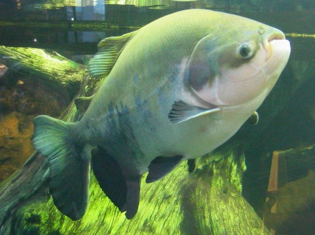
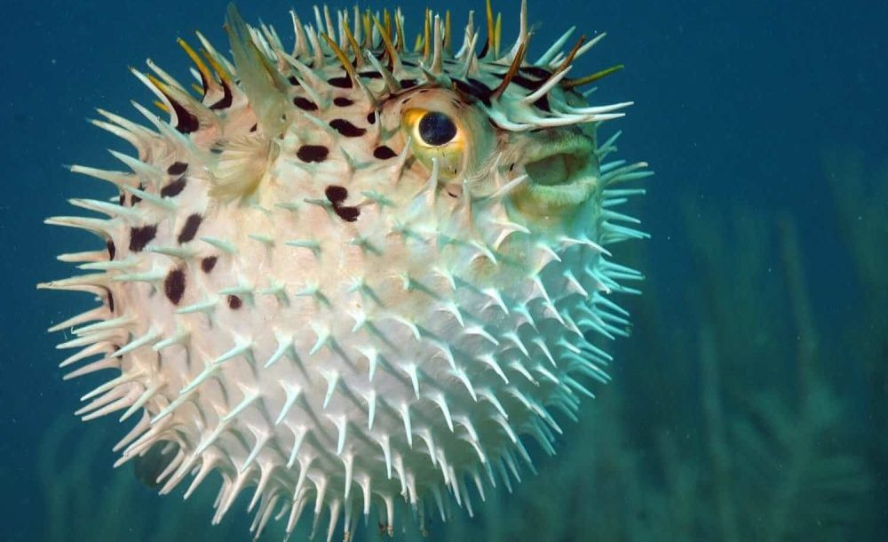

Produtos em Destaque

Vara de Pesca Pro 300
Vara carbono leve, ideal pra pescar qualquer coisa.
R$ 189,90

Isca Especial Aquática
Atrai qualquer peixe da região
R$ 59,90

Molinete Titan 2000
Resistente à água salgada e doce.
R$ 349,00

Kit Pescador Iniciante
Tudo que você precisa pra começar a pescar.
R$ 129,90
Espécies & Curiosidades

Pacu — clássico dos pesque-pagues

Baiacu — conhecidos por seus dentes poderosos

Tucunaré — predador do pantanal

o maior peixe encontrado no mundo

O maior tanque de pesca localizado em sp

o tubarão que vive cerca de 400 anos
Sobre a Plataforma
O Engenheiros da Pesca é o melhor site de pesca do brasil Aqui você encontra equipamentos, espécies, dicas e conteudo educativo em um único lugar.